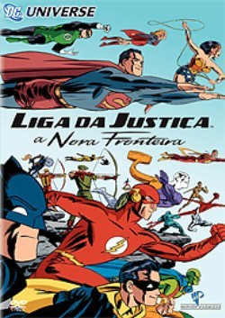
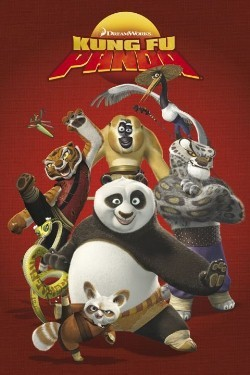
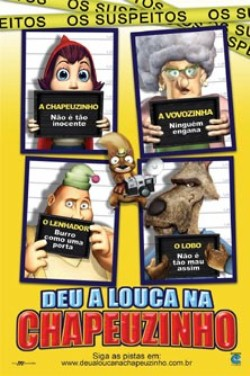
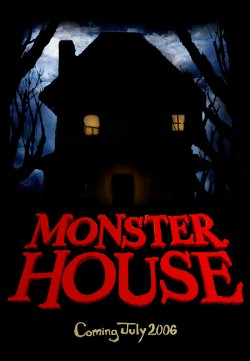

Ano: 2007
País: EUA
Ficha Técnica:
Título Original: Justice League - The New Frontier
Gênero: Animação, Ação
Duração: 74 min
Estúdio: Warner Bros.
Formato: Widescreen
|
Sinopse:
Baseada na história em quadrinhos de Darwyn Cooke, esta aventura
emocionante revela a origem da Liga da Justiça. A paranóia
da Guerra Fria põe Superman, Batman e Mulher-Maravilha sob
suspeita do governo. Somente a mais grave ameaça imaginável
pode forçar esse heróis - junto com um exército
de recém-chegados: Flash, Lanterna Verde e Marciano - a se
unirem em um confronto espetacular para salvar o mundo
|
|

Ano: 2008
País: EUA
Ficha Técnica:
Título Original: Kung Fu Panda
Gênero: Ação, Comédia
Duração: 88 min
Estúdio: Paramount Pictures
Direção: Mark Osborne, John Stevenson
Roteiro: Jonathan Aibel, Glenn Berger
Produção: Melissa Cobb
Elenco:
Jack Black - Po
Jackie Chan - Mestre Macaco
Dustin Hoffman - Mestre Shifu
Angelina Jolie - Mestra Tigresa
Lucy Liu - Mestra Víbora
Ian McShane - Tai Lung
Dan Fogler - The Goose
Dorinda Katz - Cassie
Jason Thornton - Tai Lew
Seth Rogen - Mestre Louva-Deus
|
Sinopse:
O estúdio Dreamworks tem mais uma aposta no mundo da animação
computadorizada em 2008. Depois do sucesso absoluto da trilogia "Shrek"
e do filme "Madagascar", agora a empresa investe na história
de um panda que aprende artes marciais. Assim como a produção
do ogro verde, o filme "Kung Fu Panda" tem um elenco de
voz cheio de estrelas. Angelina Jolie ("Sr. e Sra. Smith"),
Dustin Hoffman ("Entrando Numa Fria Maior Ainda"), Jackie
Chan ("A Hora do Rush 3") e Jack Black ("King Kong")
dublam os principais personagens da aventura. Ambientado na China
antiga, a animação conta a história de um panda
preguiçoso chamado Po (Jack Black), único animal capaz
de salvar o Vale da Paz do poderoso vilão Tai Lung, um leopardo
da neve. Para cumprir a missão, Po recebe aulas da Mistress
Tigress (Angelina Jolie), que o ensina a lutar como um verdadeiro
mestre das artes marciais. “Kung Fu Panda” foi finalizado
em outubro do ano passado (2007) e teve um longo trabalho de pós-produção,
onde as vozes, gravadas em 2006, foram finalmente inseridas. Posteriormente,
atores como Angelina Jolie e Jack Black voltaram aos estúdios
para as cenas adicionais.
|
|

Ano: 2005
País: EUA
Ficha Técnica:
Título Original: Hoodwinked
Gênero: Animação, Comédia
Duração: 80 min
Estúdio: Europa Filmes
Direção: Cory Edwards
Roteiro: Cory Edwards, Todd Edwards
Produção: Maurice Kanbar, David Lovegren, Sue Bea Montgomery,
Preston Stutzman
Elenco:
Glenn Close (Vovó), Anne Hathaway (Chapeuzinho Vermelho),
James Belushi (Lenhador), Patrick Warburton (Lobo Mau), Anthony
Anderson (Detetive Bill Stork), Chazz Palminteri (Woolworth), David
Ogden
Stiers (Inspetor Nick Pirueta), Xzibit (Chefe Urso), Andy Dick (Boingo),
Cory Edwards (Twitchy), Tye Edwards (Dolph), Benjy Gaither (Bode),
Tom
Kenny (Tommy), Joshua J. Greene (Jimmy Lizard), Preston Stutzman
(Timmy), Tony Leech (Bill), Ken Marino (Raccoon Jerry), Kevin Michael
Richardson (P-Biggie), Todd Edwards (Homem do sanduíche).
|
Sinopse:
“Deu a Louca na Chapeuzinho” começa no fim da história
retorna ao seu início... Tudo começa quando uma mistura
de detetives e
policiais peludos e plumados chegam à casa da Vovozinha no bosque
para atender a uma chamada de distúrbio doméstico. A princípio,
parece apenas outro caso comum de lenhador atacando um lobo vestido
de vovozinha, com uma combinação de acusações
criminais que incluem invasão de domicílio, intenção
de comer e o porte de machado sem licença. Mas as aparências
enganam. À medida que o educado detetive Nicky Flippers e o chefe
de polícia sempre de nariz torcido (ou será de nariz peludo?)
Grizzly, e o companheiro oficial de polícia Bill Stork questionam
os traiçoeiros suspeitos, eles descobrem que cada um tem uma
história completamente diferente, embora igualmente louca e confusa,
para contar. Não apenas isso, mas parece que o crime tem relação
com o infame “Goody Bandit”,
que tem atacado os bosques para roubar as inestimáveis receitas
que mantêm a floresta cheia de bolinhos. Ninguém no grupo
é exatamente o que parece, e cada um tem seus próprios
segredos e truques traiçoeiros. Os detetives logo descobrem que
a aparentemente inocente Chapeuzinho tem muita experiência do
mundo; que o Lobo Mau foi terrivelmente incompreendido; que a Vovozinha
tem uma vida secreta que ninguém poderia ter imaginado; e que
o inseguro Lenhador, cuja força física pode exceder –
bem você conhece o estereótipo – tem algumas ambições
surpreendentes. Eles não são suspeitos comuns, mesmo assim
os investigadores precisam usar os relatos conflitantes das testemunhas
oculares para solucionar o mistério, cada vez mais complicado,
de quem entre eles cometeu um crime. Quando ao final a verdadeira identidade
do malvado vilão é revelada, cabe à Chapeuzinho,
ao Lobo, ao Lenhador e à Vovozinha deixar suas diferenças
para trás e encontrar a própria
interpretação do “viveram felizes para sempre”.
|
|

Ano: 2006
País: EUA
Ficha Técnica:
Título Original: Monster House
Gênero: Animação / Aventura
Duração: 90 min
Estúdio: Columbia Pictures
Direção: Gil Kenan
Roteiro: Gil Kenan, Dan Harmon, Pamela Pettler, Rob Schrab
Produção: Steven Spielberg, Robert Zemeckis, Steve Starkey,
Jack Rapke
Elenco:
Mitchel Musso (DJ), Sam Lerner (Chowder), Spencer Locke (Jenny), Steve
Buscemi (Nebbercracker), Nick Cannon (Oficial Lister), Maggie Gyllenhaal
(Zee), Jon Heder (Skull), Kevin James (Oficial Landers), Jason Lee (Bones),
Catherine O`Hara (Mãe de DJ), Fred Willard (Pai de DJ), Kathleen
Turner (Constance), Ryan Newman (Eliza). |
Sinopse:
DJ Walters, de 12 anos, que foi pego em flagrante em meio aquele delicado
e momento intimo entre a infância e o começo da puberdade,
possui tempo livre de sobra e ninguém tira de sua cabeça
que existe alguma coisa estranha em relação à casa
do velho Nebbercracker do outro lado da rua. É véspera
do Dia das Bruxas – Halloween – e DJ e seu amigo comilão
de doces, Chowder, se deparam com o Senhor Nebbercracker depois que
a bola de basquete dos dois cai no terreno dele e some misteriosamente
para dentro da casa. Quando a casa tenta devorar sua nova amiga Jenny
e ninguém acredita no trio amedrontado que insiste em dizer que
há algo de errado com aquela casa, cabe a eles investigar o mistério.
Eles recorrem aos conselhos da única pessoa no planeta que poderia,
mesmo que remotamente, entender o que está acontecendo, o sábio
que eles chamam de Skull. Ele é um preparador de pizza preguiçoso,
de uns 20 anos de idade, e mestre na máquina em que ele, certa
vez, jogou um videogame por quatro dias seguidos, munido apenas de dois
litros de achocolatado e uma fralda para adultos. “Eu ouvi a história
de estruturas construídas pelo homem que se tornaram possuídas
por uma alma humana”, Skull conta para eles. você quer dizer
que a casa tem vida? Caramba! Skull diz a eles que a única maneira
de fazer com que a casa pare de devorar tudo que aparece à sua
frente é acertando em cheio seu coração, o que
para as crianças só pode ser a sempre ativada fornalha
localizada no porão. Eles pensam num plano que parece infalível
— um aspirador de pó disfarçado de humano e repleto
de remédio contra gripe. As crianças oferecem a isca para
a casa, imaginando que ela esteja dormindo e, assim, possam entrar escondidas
e apagar a fornalha com suas seringas de atirar água. No entanto,
o plano fracassa e quando a casa começa a persegui-los pela rua
— isso mesmo, os perseguindo pela rua! — eles terão
de unir suas forças para mais uma vez garantirem segurança
aos moradores do bairro contra trapaças e trapaceiros
|
|
|
País: EUA
Ficha Técnica:
Título Original: Cinderella
Gênero: Infantil
País de produção: Estados Unidos
Recomendação: Livre
Tempo: 75 minutos
Distribuição Buena Vista Home Vídeo
Cor: Colorido
Direção: Clyde Geronimi, Wilfred Jackson, Hamilton Luske.
Elenco:
Ilene Woods
Eleanor Audley
Verna Felton
Claire Du Brey
Helene Stanley
Luis Van Rooten
Don Barclay
Rhoda Williams
James MacDonald
June Foray |
Sinopse:
Era uma vez... um clássico de animação que ultrapassou
os limites do tempo e se tornou uma das maiores realizações
de Walt Disney, Cinderela.
O filme conta a universal história do sonho que se torna realidade
através de inesquecíveis canções e personagens
como os ratinhos, a madrasta e a fada madrinha.
Toda a beleza deste grande clássico, em uma edição
especial, totalmente restaurada e remasterizada.
|
|
|